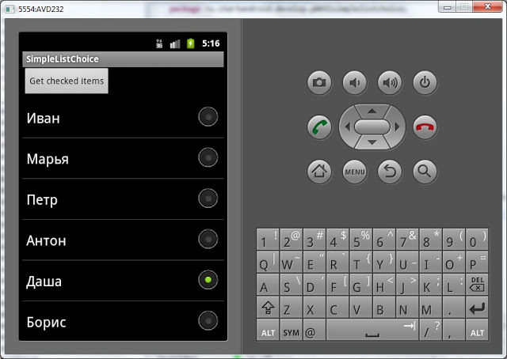
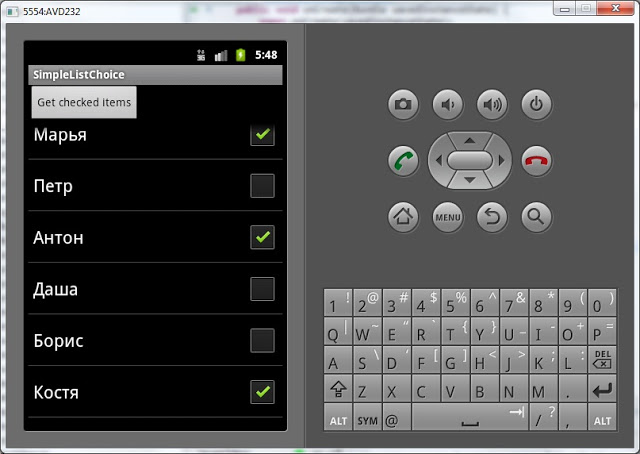

В этом уроке:
- используем список ListView для одиночного и множественного выбора элементов
Бывает необходимость предоставить пользователю возможность выбрать один или несколько элементов из списка. Давайте посмотрим, как это можно реализовать.
Создадим проект:
Project name: P0431_SimpleListChoice
Build Target: Android 4.0
Application name: SimpleListChoice
Package name: ru.startandroid.develop.p0431simplelistchoice
Create Activity: MainActivity
Нарисуем экран main.xml:
<?xml version="1.0" encoding="utf-8"?>
<LinearLayout
xmlns:android="http://schemas.android.com/apk/res/android"
android:layout_width="fill_parent"
android:layout_height="fill_parent"
android:orientation="vertical">
<Button
android:id="@+id/btnChecked"
android:layout_width="wrap_content"
android:layout_height="wrap_content"
android:text="Get checked items">
</Button>
<ListView
android:id="@+id/lvMain"
android:layout_width="match_parent"
android:layout_height="wrap_content">
</ListView>
</LinearLayout>Список lvMain и кнопка btnChecked, по нажатию, на которую будем выводить в лог отмеченные в списке элементы.
Предлагаю вспомнить, что у нас есть файлы ресурсов и мы можем их использовать. Найдем в нашем проекте файл с ресурсами res/values/strings.xml и добавим туда массив строк с именами. В итоге у меня получился файл с таким содержимым:
<?xml version="1.0" encoding="utf-8"?>
<resources>
<string name="hello">Hello World, MainActivity!</string>
<string name="app_name">SimpleListChoice</string>
<string-array name="names">
<item>Иван</item>
<item>Марья</item>
<item>Петр</item>
<item>Антон</item>
<item>Даша</item>
<item>Борис</item>
<item>Костя</item>
<item>Игорь</item>
<item>Анна</item>
<item>Денис</item>
<item>Вадим</item>
<item>Ольга</item>
<item>Сергей</item>
</string-array>
</resources>Из этого списка мы будем получать массив имен. Это удобнее и правильнее, чем перечислять все элементы массива в java-коде.
Кодим MainActivity.java:
package ru.startandroid.develop.p0431simplelistchoice;
import android.app.Activity;
import android.os.Bundle;
import android.util.Log;
import android.view.View;
import android.view.View.OnClickListener;
import android.widget.ArrayAdapter;
import android.widget.Button;
import android.widget.ListView;
public class MainActivity extends Activity implements OnClickListener {
final String LOG_TAG = "myLogs";
ListView lvMain;
String[] names;
/** Called when the activity is first created. */
public void onCreate(Bundle savedInstanceState) {
super.onCreate(savedInstanceState);
setContentView(R.layout.main);
lvMain = (ListView) findViewById(R.id.lvMain);
// устанавливаем режим выбора пунктов списка
lvMain.setChoiceMode(ListView.CHOICE_MODE_SINGLE);
// Создаем адаптер, используя массив из файла ресурсов
ArrayAdapter<CharSequence> adapter = ArrayAdapter.createFromResource(
this, R.array.names,
android.R.layout.simple_list_item_single_choice);
lvMain.setAdapter(adapter);
Button btnChecked = (Button) findViewById(R.id.btnChecked);
btnChecked.setOnClickListener(this);
// получаем массив из файла ресурсов
names = getResources().getStringArray(R.array.names);
}
public void onClick(View arg0) {
// пишем в лог выделенный элемент
Log.d(LOG_TAG, "checked: " + names[lvMain.getCheckedItemPosition()]);
}
}Мы устанавливаем для списка режим выбора - CHOICE_MODE_SINGLE. Это значит, что список будет хранить позицию последнего нажатого пункта и мы всегда можем запросить у него эту информацию. Далее мы создаем адаптер, но не через обычный конструктор, а с использованием метода createFromResource. Параметры на вход почти те же, что и в обычном конструкторе, только вместо массива данных, мы указываем массив строк в ресурсах, который мы создали чуть раньше. В качестве layout-ресурса для пунктов используем системный simple_list_item_single_choice. Он как раз заточен под такое использование.
Далее мы, находим кнопку btnChecked и присваиваем ей Activity в качестве обработчика. И в конце считываем наш массив имен из файла-ресурса в массив строк.
В обработчике нажатия кнопки мы выводим в лог имя из массива. В качестве индекса используем позицию пункта в списке. Последовательность элементов в массиве и в списке совпадают.
Все сохраняем, запускаем и видим список. Выделяем какой-нить пункт:

Жмем кнопку Get checked items и смотрим лог:
checked: Даша
Все верно.
Теперь чуть изменим код программы и получим список с множественным выбором.
// устанавливаем режим выбора пунктов списка
lvMain.setChoiceMode(ListView.CHOICE_MODE_MULTIPLE);
// Создаем адаптер, используя массив из файла ресурсов
ArrayAdapter<CharSequence> adapter = ArrayAdapter.createFromResource(
this, R.array.names,
android.R.layout.simple_list_item_multiple_choice);Мы заменили CHOICE_MODE_SINGLE на CHOICE_MODE_MULTIPLE и теперь список будет хранить позиции выделенных элементов. Также мы заменили simple_list_item_single_choice на simple_list_item_multiple_choice – пункты списка теперь будут позволять множественный выбор.
Метод onClick перепишем следующим образом:
public void onClick(View arg0) {
// пишем в лог выделенные элементы
Log.d(LOG_TAG, "checked: ");
SparseBooleanArray sbArray = lvMain.getCheckedItemPositions();
for (int i = 0; i < sbArray.size(); i++) {
int key = sbArray.keyAt(i);
if (sbArray.get(key))
Log.d(LOG_TAG, names[key]);
}
}Мы получаем позиции выделенных элементов в виде объекта SparseBooleanArray. Он представляет собой Map(int, boolean). Ключ (int) – это позиция элемента, а значение (boolean) – это выделен пункт списка или нет. Причем SparseBooleanArray хранит инфу не о всех пунктах, а только о тех, с которыми проводили действие (выделяли и снимали выделение). Мы перебираем его содержимое, получаем позицию пункта и, если пункт выделен, то выводим в лог имя из массива, соответствующее позиции пункта.
Все сохраняем, запускаем приложение. Выделяем несколько элементов:

Жмем кнопку Get checked items и смотрим лог:
checked:
Марья
Антон
Костя
Что мы выделили, то нам список и вернул.
Как видим, отличие обычного списка от списка с возможностью выделения пунктов заключается только в разных режимах ChoiceMode и в использовании разных layout-ресурсов для пунктов списка.
Кстати, здесь мы снова видим, зачем нужен Context при создании адаптера. Без него адаптер не смог бы добраться до файла ресурсов. Метода getResources у адаптера нет, и он использует указанный контекст, который содержит такой метод.